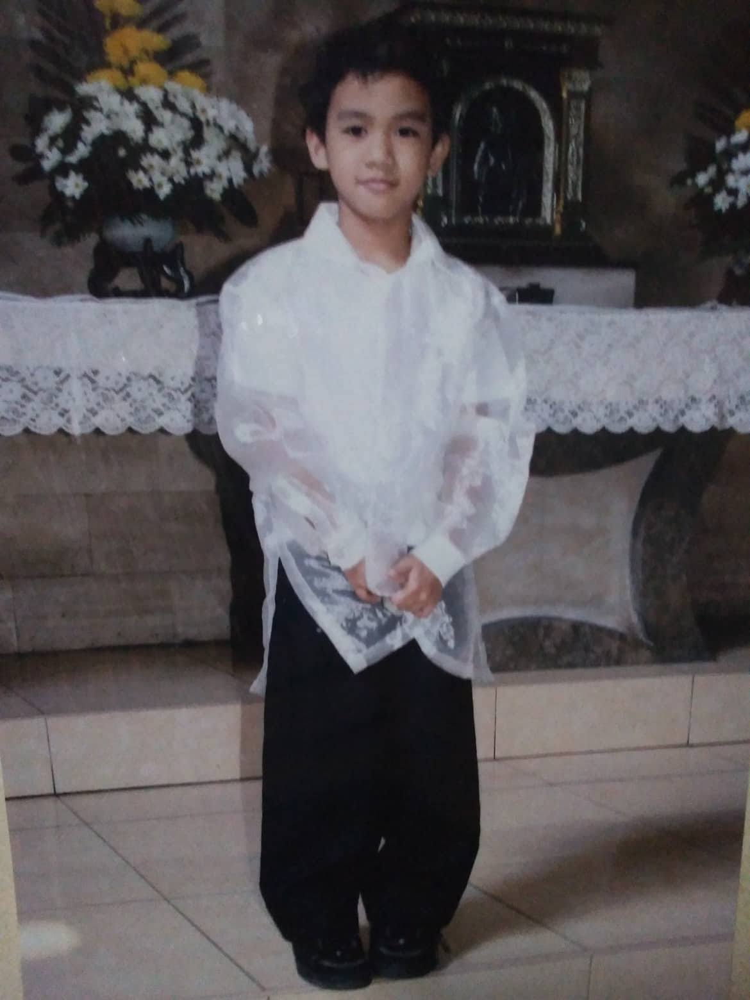
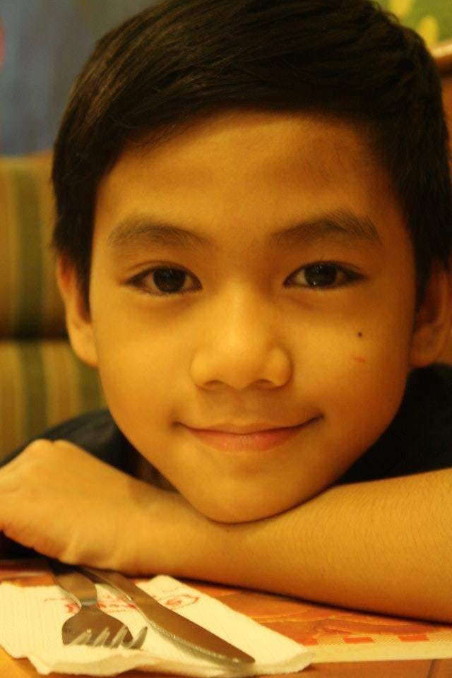
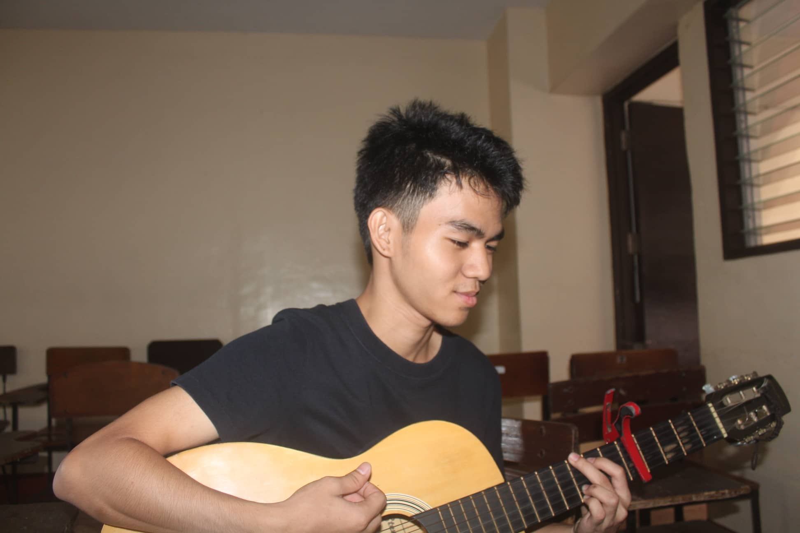
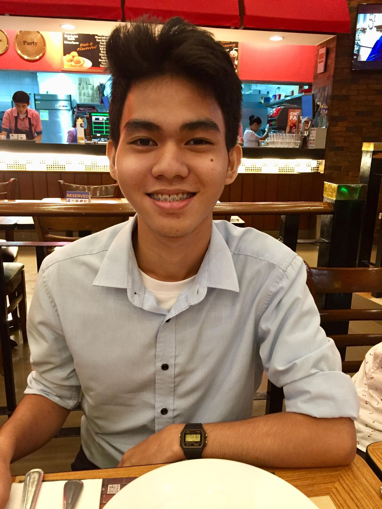

The most beautiful experience we can have is the mysterious.
Albert Einstein
Click the following categories to read the full experiences and past events that are grouped to the specified age.
Childhood Years
I was young with a few friends that can almost go and run anywhere.
We mostly play tag and any kind of energetic games that starts from morning till evening.
We would buy drinks and..
Teenage Years
My friend would teach me some chords and borrow his guitar just to experience using one.
As time pass, my sister bought me my own guitar on my birthday.
My fingers were sore but still play...
College Years
We would often declare dares to the one who lost and do those dares in one class to another.
Aside from this, we attended a basketball match as requirement for our PE class where our school’s team
versus the other universities team. Expecting from the past matches...


1I was young with a few friends that can almost go and run anywhere.
2We mostly play tag and any kind of energetic games that starts from morning till evening.
3We would buy drinks and sometimes go to some of their houses to replenish some energy.
4Whenever some of us can’t due to sickness, we would come to their place for a visit and often play stationary types.
5Aside from this, my siblings would often play pranks on me.
6They would hide and sometimes disappear in a short period of time and would pop out of nowhere to scare me.
7My brother and I would go to computer shops and 1v1 and coop to Crossfire and DOTA 1.
8In addition to this, we would play chess with a few conditions from the loser side and of course I would lose often as I was not aware of any strategies let alone a move from each piece would go but I still had fun then.
9My sisters often teach me some lessons I’d learn when I was in kindergarten.
10I would often escape until they would lock the gate and keys would be in their hands.
11Either way, learning academics was not my strongest feature.
12As my I graduate from kinder and started elementary, I would often catch as being noisy during classes.
13Since my attention span was as short as my height unless it was a subject in my interest, I would often talk to my classmates about games and TV shows.
14My grades where passing but not pleasing to the eyes of my parents.
15Since then, my parents would check my notebook to see any topics and lecture me some points about it.
16It did not improve my intelligence whatsoever but became aware of the importance the grades.
17I was still learning and barely pass the subjects as I graduated elementary.
18The high school that my parents chose were the same as my brother and sister go to but they already graduated high school.
19My childhood continues but became to be cautious of my grades as my parents taught me.
20Aside from this, I still prioritize having fun and making friends that would help me to do them.
Go Back to top

1My grades were not improving and because of this, My parents warned me.
2Punishments are necessary in order to learn from mistakes and since then, I begin to learn and would study for their sake and for mine as well.
3As I continue, I became interested in learning to play a guitar.
4My friend would teach me some chords and borrow his guitar just to experience using one.
5As time pass, my sister bought me my own guitar on my birthday.
6My fingers were sore but still play as there are improvements showing.
7My friends and I would jam as each recess or break time occur.
8We would also practice dancing for a certain group presentation in our subject
9Even in the Christmas party, the whole class must perform their certain talents.
10The term “issue” didn’t apply to me but since there certain times I would approach a girl which is my friend in my class, my classmates would tease me assuming we were couples or something.
11I was annoyed and they didn’t even believe me as if it is were some excuse because I was shy.
12Regardless the girl I always approach lessened.
13During my class, I college student introduced us K-12 by which adding 2 more years with a course/strand we would choose.
14I chose General academics and never regretted choosing it due to meeting some friends that I am glad to have.
15We would study and sometimes hangout to places we need to go.
16Each collaborative event we need to do are fun as there were various subject that I learned.
17But since then, I was introduced to course that introduces computers and programming.
18I’ve liked the subject and decided to pursue the course in my college.
19Sadly, I did not pass the entrance exam to the current college I was in and would seem to be separate to my precious friends as I pick the ones I passed.
20We promised to hangout even when in different colleges.
Go Back to top

1I became friends with a few classmates.
2We learned and discuss to each other about our futures and subjects about our teachers.
3We would talk about topics unrelated to our class and share a few interesting experiences.
5Mischievous pranks would often occur to some which includes in our game of cards (UNO) and chess.
5We would often declare dares to the one who lost and do those dares in one class to another.
6Aside from this, we attended a basketball match as requirement for our PE class where our school’s team versus the other universities team.
7Expecting from the past matches of our school’s team, we would anticipate ours would lose.
8But a miracle occurs, a tie score between them and the time as reaching its end
9We shouted and cheered to the team and would joke to hide our red colored t shirts that symbolizes our university to the opposing one.
10The match ended where our university won as we drained our vocals.
11Before Covid 19, My senior high school friends and I planned out an overnight.
12Me and my other friend were late because we had assignments and class that we had finished in short amount of time.
13We met with the others with a few updates and experiences that we shared until night.
14We drank a few as we watched horror movies but a few already were asleep.
15We would picture their faces and send them to our group chat for the memories but regrettable for them.
16During the quarantine today we would only chat and call each other from time to time.
17They would plan vacations, outings as soon as the quarantine ended.
18We would sometimes help each other in our assignments even if we were separate schools.
19I sometimes play some online games with them during our free time until today.
20Up until now we would talk and share about our lives and same as the others, I missed them and hoped that
we would meet each other personally again.
Go Back to top